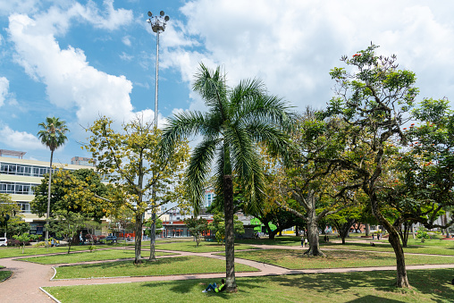
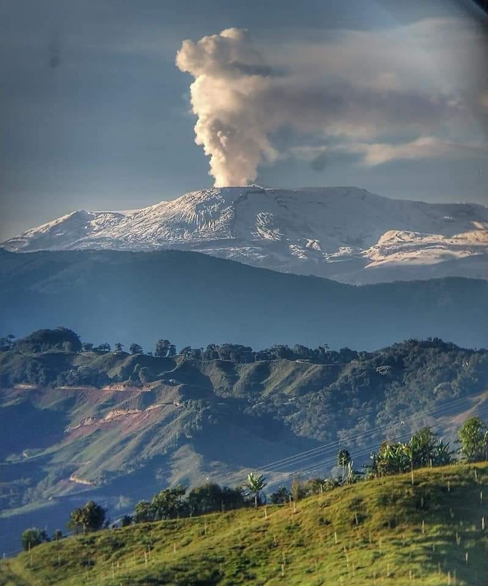
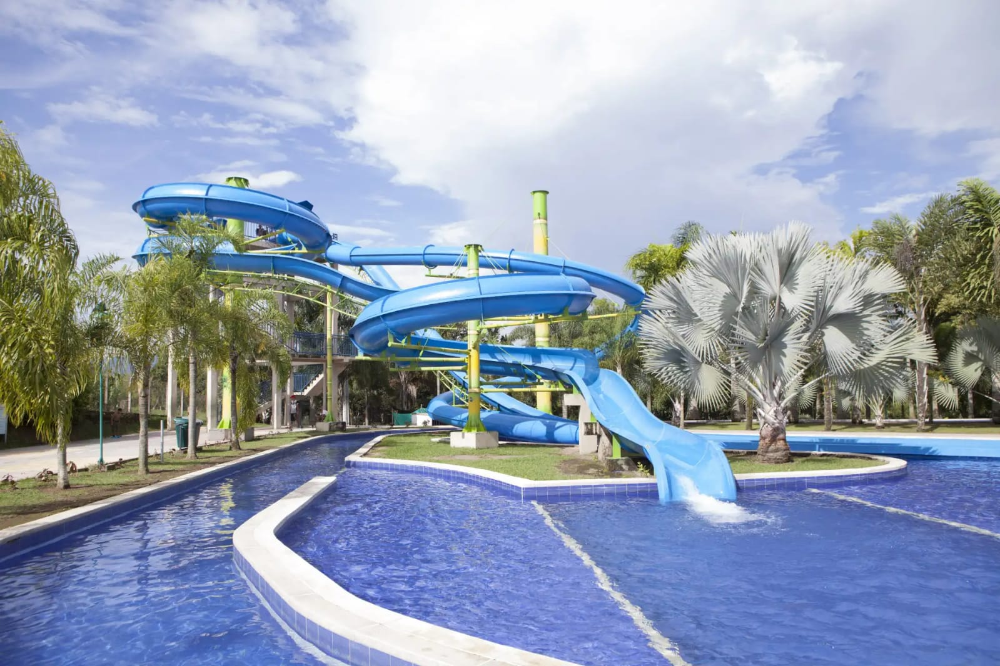

Parks of Pereira
👥 2.5k visits/month

Olaya Herrera Park
🏃‍♂️ Running track
🌳 Green areas
This park is located on avenue 30 August - Street 19.
👥 3k visitas/mes

Snowy Peak of Ruiz
🔠Montain
❄ Could
It is located on Manizales-Caldas
👥 1.8k visitas/mes

Consotá
🌊 Pool
🌺 Gardens
🵠Musical Events
This park is located on Galicia-Cerritos.